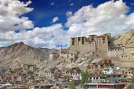

Itinerary
Day 1: Arrival in Leh, acclimatization
Day 2: Leh Local Sightseeing (Shanti Stupa, Leh Palace, Leh Market)
Day 3: Leh to Nubra Valley via Khardung La Pass
Day 4: Nubra Valley to Pangong Lake via Shyok Valley
Day 5: Pangong Lake to Leh
Day 6: Leh to Tso Moriri Lake via Chumathang
Day 7: Tso Moriri Lake to Leh
Day 8: Leh to Lamayuru via Alchi and Likir Monasteries
Day 9: Lamayuru to Leh
Day 10: Departure from Leh
Places to Visit

- Pangong Lake, also known as Pangong Tso, is a breathtaking high-altitude lake nestled in the Himalayas in the Ladakh region of Jammu and Kashmir, India.
- Location: Situated at an altitude of approximately 4,350 meters (14,270 feet) above sea level.
- Geography: It spans an area of approximately 134 square kilometers and is renowned for its stunning blue and green hues.
- Tourist Attraction: Pangong Lake attracts travelers worldwide who come to admire its natural beauty and serene ambiance.
- Accessibility: Accessible by road from Leh, the capital of Ladakh, which is approximately 160 kilometers away.
- Film Location: Pangong Lake gained international fame after being featured in the Bollywood movie "3 Idiots" and is a popular filming location.
- Permit Requirement: Travelers need to obtain an Inner Line Permit (ILP) from the Ladakh administration.
- Best Time to Visit: May to September offers pleasant weather, but adventurous travelers also visit during winter to witness the frozen lake.
Pangong lake
Nubra Valley
- Nubra Valley, located in the northern part of Ladakh in the Indian union territory of Jammu and Kashmir, is a mesmerizing destination known for its breathtaking landscapes, cultural heritage, and adventurous activities.
- Geography: Situated at an average altitude of around 10,000 feet above sea level, Nubra Valley is surrounded by towering snow-capped peaks of the Himalayas and the Karakoram Range. The valley is formed by the confluence of the Nubra and Shyok rivers, creating a lush green oasis amidst the arid desert landscape of Ladakh.
- Scenic Beauty: Renowned for its stunning natural beauty, Nubra Valley is characterized by verdant green valleys, meandering rivers, and picturesque villages dotted with apricot orchards and barley fields. The contrasting landscapes of sand dunes against the backdrop of snow-capped mountains create a surreal and captivating ambiance.
- Tourist Attractions:
- Diskit Monastery: One of the most prominent attractions in Nubra Valley is the Diskit Monastery, also known as Diskit Gompa. Perched atop a hill overlooking the valley, this 14th-century monastery is home to a giant statue of Maitreya Buddha and offers panoramic views of the surrounding landscape.
- Hunder Sand Dunes: Famous for their towering sand dunes resembling a desert landscape, visitors can enjoy camel rides and witness mesmerizing sunsets painting the dunes in golden hues.
- Adventure Activities:
- Trekking: Several trekking routes in the valley offer opportunities to explore remote villages, high mountain passes, and breathtaking landscapes.
Hemis Monastery
Hemis Monastery, located in the Hemis village of Ladakh region in the state of Jammu and Kashmir, India, is one of the most renowned and largest monasteries in the region.
Location
Hemis Monastery is situated approximately 45 kilometers southeast of Leh, the capital of Ladakh. It is nestled in the scenic Hemis village, surrounded by the rugged Himalayan mountains.
History
The monastery was founded in the 17th century by the first incarnation of Stagsang Raspa Nawang Gyatso, who was a disciple of the renowned Buddhist master, Je Tsongkhapa. It belongs to the Drukpa lineage of Tibetan Buddhism and is affiliated with the Kagyu school.
Architecture
Hemis Monastery features traditional Tibetan architectural elements, including whitewashed walls, intricately carved wooden windows and doors, and colorful murals depicting Buddhist motifs and deities. The main attraction of the monastery is its magnificent assembly hall, known as Dukhang, which houses a stunning array of religious artifacts, thangkas (scroll paintings), and statues.
Main Attractions
Visiting Tips
- Visitors to Hemis Monastery are advised to dress modestly and respectfully, covering their shoulders and legs, as it is a religious site.
Hemis Monastery is not only a spiritual center but also a cultural treasure that offers visitors a glimpse into the ancient traditions and practices of Tibetan Buddhism. Its serene ambiance, stunning architecture, and religious significance make it a must-visit destination in Ladakh.
Leh Palace

Leh Palace, also known as Lhachen Palkar, is a historic royal palace located in the town of Leh, the capital of the Ladakh region in the Indian state of Jammu and Kashmir.
- Location: Leh Palace is situated atop a hill overlooking the Leh town, offering panoramic view.
- History: The construction of Leh Palace was initiated in the 16th century by King Sengge Namgyal of the Namgyal dynasty, who was a prominent ruler of Ladakh.
- Architecture: Leh Palace is renowned for its imposing structure and traditional Tibetan architectural style. It is constructed using locally available materials such as stone, wood, mud bricks, and poplar wood beams. The palace features multiple levels, courtyards, staircases, and intricately decorated facades adorned with ornate carvings and murals.
- Main Attractions:
- Tsemo Namgyal Palace: This is the main structure of Leh Palace, consisting of multiple floors and rooms. The palace is adorned with colorful frescoes, intricate woodwork, and elaborate thangka paintings depicting Buddhist motifs and historical events.
- Chokhang Temple: Located within the palace complex, Chokhang Temple is a sacred shrine dedicated to the guardian deities of Ladakh. It houses a large statue of Maitreya Buddha (future Buddha) and serves as a place of worship and meditation for the local Buddhist community.
- Leh Palace Museum: A part of the palace has been converted into a museum showcasing artifacts, royal costumes, antique weapons, religious objects, and historical documents related to the Namgyal dynasty and the cultural heritage of Ladakh.